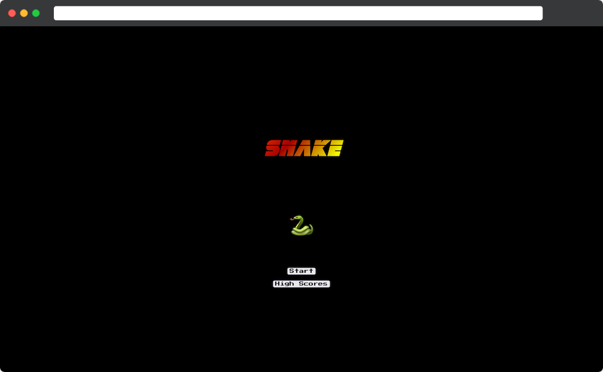

Arcade
 View Site
Key Technologies: FastAPI, Angular, WebSockets, JWT, Token Based Authentication
For this project I wanted to explore the use of WebSockets and the challenge of managing real time communication between
two clients. I decided to create a version of the classic Snake arcade game, but with multiplayer functionality.
I originally built this service using Flask and "vanilla" JavaScript. Whilst the single player version of the game
functioned well with this technology stack, I found it difficult to implement an effective WebSockets solution for
communication between clients, resulting in choppy, laggy multiplayer gameplay.
As a result, I rebuilt the project using FastAPI to handle backend tasks such as player registration, game lobby
creation and management and handling of the WebSockets communication between connected clients. I also updated the
front end implementation to use Angular to handle the frontend visual rendering of the game.
This project also interfaces with the authentication server I built as a separate project (see the corresponding
project page for details), giving me experience of using JWTs in a token based authentication scheme.